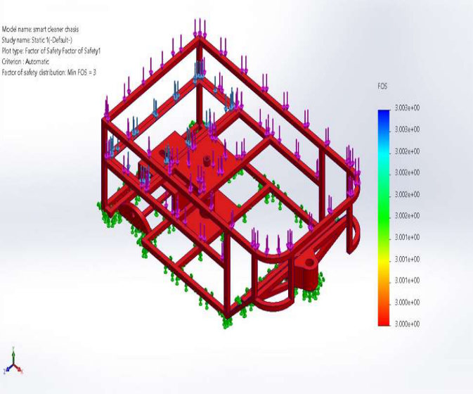

I study how robots should act on what they cannot fully see or feel:
vision-language-action models for contact-rich manipulation, tactile learning,
and 3D scene completion from partial observation.
My work asks how a robot should perceive the parts of the world it is about to touch, when cameras only see part of the scene. Here I am collecting the real-robot demonstrations behind HapticVLA, followed by the lab's official video of the finished work.
HapticVLA · IEEE/RSJ IROS 2026 · Skoltech Top Paper Award
Teaching robots to handle fragile objects
I operated our dual-arm teleoperation rig to collect the real-world demonstrations
behind HapticVLA: lifting an egg from a crate, placing waffles and cans into boxes.
The policy learns tactile awareness during training and needs no touch sensor at
deployment, reaching 86.7% mean success on real contact-rich tasks.
The lab's video for the paper, from Prof. Dzmitry Tsetserukou's YouTube channel.
HapticVLA is a ten-author team project; the stage I worked on is the
dataset collection, at 0:29. Jump to any part:
First author · Under review, IEEE ICRA 2027 · 2026
A quadruped sent to a named gas leak: open-vocabulary olfactory scene graphs keep
gas identity and source estimates, and diffusion planning drives navigation, evaluated
across 424 source and wind configurations with matched Gazebo trials.
arXiv ↗
Cite
@misc{ogunwoye2026smelldiffusion,
title = {SmellDiffusion: Diffusion-Based Quadruped Navigation with Olfactory Scene Graphs},
author = {Ogunwoye, Faith and Zhura, Iana and Amjad, Hajira and Kozlov, Timofei and Seyidov, Didar and Plotnikov, Dmitrii and Fedorov, Fedor and Tsetserukou, Dzmitry},
year = {2026},
eprint = {2609.20624},
archivePrefix = {arXiv},
primaryClass = {cs.RO},
url = {https://arxiv.org/abs/2609.20624}
}
Tactile capability is distilled into a vision-language-action policy, reaching 86.7%
mean success on real contact-rich tasks with no tactile sensor at inference. I collected
the real-world dual-arm teleoperation demonstrations the model was trained on.
arXiv ↗
· Video ↗
Cite
@inproceedings{gubernatorov2026hapticvla,
title = {HapticVLA: Contact-Rich Manipulation via Vision-Language-Action Model without Inference-Time Tactile Sensing},
author = {Gubernatorov, Konstantin and Sannikov, Mikhail and Mikhalchuk, Ilya and Kuznetsov, Egor and Artemov, Makar and Ogunwoye, Faith Oluwatobi and Fernando, Marcelino and Asanov, Artem and Guo, Ziang and Tsetserukou, Dzmitry},
booktitle = {IEEE/RSJ International Conference on Intelligent Robots and Systems (IROS)},
year = {2026},
eprint = {2603.15257},
archivePrefix = {arXiv},
url = {https://arxiv.org/abs/2603.15257}
}
CloudDiffusion: Diffusion-Based Scene Completion in the Point Cloud Domain
Chidera Agbasiere*, Mikhail Sannikov*, Faith Ogunwoye, Erik Shaikhiev, Alex Kozinov, Ilya Mikhalchuk, Iana Zhura, Dzmitry Tsetserukou
IEEE SMC 2026
Diffusion-based LiDAR scene completion directly in the point cloud domain. I built the
monocular branch, replacing LiDAR input with single-camera depth converted to pseudo-LiDAR,
and quantified what that substitution costs.
arXiv ↗
Cite
@inproceedings{agbasiere2026clouddiffusion,
title = {CloudDiffusion: Diffusion-Based Scene Completion in the Point Cloud Domain},
author = {Agbasiere, Chidera and Sannikov, Mikhail and Ogunwoye, Faith and Shaikhiev, Erik and Kozinov, Alex and Mikhalchuk, Ilya and Zhura, Iana and Tsetserukou, Dzmitry},
booktitle = {IEEE International Conference on Systems, Man, and Cybernetics (SMC)},
year = {2026},
eprint = {2606.16048},
archivePrefix = {arXiv},
url = {https://arxiv.org/abs/2606.16048}
}
HapticWAM: Distilling Imagined Touch into a World-Action Model without Inference-Time Tactile Sensing
Mikhail Sannikov*, Ilya Mikhalchuk*, Konstantin Gubernatorov*, Petr Kovalev, Faith Ogunwoye, Dzmitry Tsetserukou
Under review, IEEE ICRA 2027 · 2026
A world action model that predicts future frames, imagined contact and robot actions,
distilling tactile knowledge so no fingertip sensor is needed at deployment.
arXiv ↗
Cite
@misc{sannikov2026hapticwam,
title = {HapticWAM: Distilling Imagined Touch into a World-Action Model without Inference-Time Tactile Sensing},
author = {Sannikov, Mikhail and Mikhalchuk, Ilya and Gubernatorov, Konstantin and Kovalev, Petr and Ogunwoye, Faith Oluwatobi and Tsetserukou, Dzmitry},
year = {2026},
eprint = {2609.23888},
archivePrefix = {arXiv},
primaryClass = {cs.RO},
url = {https://arxiv.org/abs/2609.23888}
}
🦾
JitterVLA: A Replay Benchmark for Motion Quality in VLA-Driven Human-Robot Manipulation
Faith Ogunwoye, Didar Seyidov, Konstantin Gubernatorov, Dzmitry Tsetserukou
VLA targets reach the robot controller late and irregularly, so a sensible action can still move
abruptly near people. JitterVLA replays identical commands and arrival traces through different
controllers: interpolation cut modelled p99 jerk by 83% at a 2.0 cm tracking cost, and lowered
measured jerk on a real UR3 in all six exploratory pairs. Code and data are withheld
until the HRI review is complete.
arXiv ↗
· Project page ↗
Cite
@misc{ogunwoye2026jittervla,
title = {JitterVLA: A Replay Benchmark for Motion Quality in VLA-Driven Human-Robot Manipulation},
author = {Ogunwoye, Faith and Seyidov, Didar and Gubernatorov, Konstantin and Tsetserukou, Dzmitry},
year = {2026},
eprint = {2610.13628},
archivePrefix = {arXiv},
url = {https://arxiv.org/abs/2610.13628}
}
Creating New Materials and Technologies to Reduce the Environmental Impact of Human Activity
Intl. Journal of Advanced Multidisciplinary Research and Studies, Vol. 3, Issue 6 · 2023
Review of emerging sustainable materials and technologies, including solar cells,
batteries, green construction materials, and electric vehicles, that reduce
environmental harm.
Paper ↗
SmellDiffusion · First author · Under review, IEEE ICRA 2027
Finding a named gas leak with a legged robot
A quadruped is told which gas to find. An open-vocabulary olfactory scene graph keeps
each gas's identity and estimated source, and diffusion planning chooses the route
through the plume. As first author I built most of the simulation, evaluating the method
across 424 source and wind configurations with matched Gazebo trials.
LiDAR is expensive, so I built the branch that replaces it with one camera: Depth
Anything V2 estimates depth, which I back-project into pseudo-LiDAR for the diffusion
model to complete, and then I measured exactly what that substitution costs.
Final-year project: detects adulterated fuel before it reaches an engine. The first
prototype failed on sensing; I rebuilt it into a working device, presented it at a
conference and it became a faculty-sponsored patent.
Sensors
Embedded
Mechanical design
Patent, 2022

Mechanical Sweeper: Design, FEA & Fabrication
Frame design, finite element stress analysis and fabrication of a mechanical sweeper,
published in the Nigerian Journal of Technological Development.
Research internship at Sintez, Moscow: SLAM and path planning for an unmanned ground
vehicle, closing the gap between what onboard sensing covers and what the planner needs.
ROS 2
SLAM
Planning
Research internship, 2026
🤖
4WD Mobile Robot, ROS 2 Simulation
Full ROS 2 + Gazebo simulation of a 4WD differential-drive robot modeled from real
hardware measurements: URDF, control, and navigation stack.
ROS 2
Gazebo
Python
URDF
Private work
📶
Compressive Sensing & MU-MIMO Beamforming
Compressive sensing framework decoding simultaneous transmissions from 100+ users
(error rate below 0.05, beating a 4x ALOHA baseline), plus learnable beamforming
for 64-antenna arrays serving 8 users.
Python
Signal Processing
ML
Graduate research project
PID Active Suspension System
PID-controlled active suspension modeling and analysis for vehicle dynamics in
MATLAB and Simulink.
Cross-platform NFT provenance inference for duplicate and near-duplicate digital media:
buyer-side duplicate-risk screening with on-chain who-minted-first resolution.
MSc, Internet of Things and Wireless Technologies · Skoltech
September 2025 to June 2027 (expected) · Robotics track · Supervisor: Prof. Dzmitry Tsetserukou
Research in the Intelligent Space Robotics Laboratory on vision-language-action models,
tactile manipulation and 3D perception: real-world dual-arm teleoperation data for
HapticVLA, the monocular branch of CloudDiffusion, first-author SmellDiffusion, and UR3
experiments for JitterVLA. Awards: Skoltech Top Paper Award (HapticVLA, 2026) and
Skoltech Community Scholarship (2026).
Research Intern, Rover UGV SLAM and Path Planning · Sintez, Moscow
2026
Intensive research internship on SLAM and path planning for an unmanned ground vehicle,
working on the gap between what onboard sensing covers and what the planner requires.
Maintenance and optimization of machinery at Africa's leading fertilizer producer.
Graduate Assistant · University of Ilorin, Nigeria
April 2023 to March 2024
Planned lectures and seminars; graded coursework and project work. Previously
university CAD instructor for machine design, 3D printing, and CNC machining.
January 2018 to February 2023 · First Class Honours · GPA 4.77 / 5 · Top 1% of department
Thesis: design, fabrication, and performance evaluation of a smart fuel screening
and engine protection device. Research assistant on the 155k GBP Royal Academy of
Engineering project "AI for Clean Energy".
06. Get In Touch
I'm applying for PhD positions starting in 2027 and I'm always glad to talk about
robot learning, touch and 3D perception. Email is the best way to reach me.